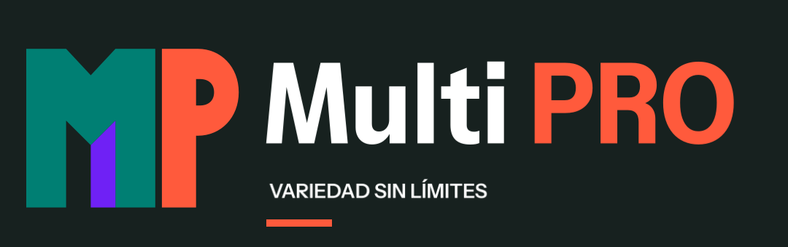

Guía de marca
Criterios para presentar una marca de variedad de productos con consistencia en medios digitales, documentos, impresión y rotulación.
Posicionamiento
Multi PRO es una marca de variedad de productos: hogar, herramientas, tecnología, cuidado personal y otras categorías que puedan incorporarse con el tiempo. La identidad no debe quedar asociada permanentemente a un solo rubro.
La propuesta comunica amplitud de catálogo con una presencia firme y reconocible. Su tono es directo, contemporáneo y accesible; evita tanto el aspecto genérico de marketplace como los acabados artificiales de una marca creada por plantilla.
Idea del símbolo
- La M verde presenta la marca como una estructura sólida y estable.
- La P coral se reconoce de inmediato y conecta con “PRO”.
- Una única cuña violeta introduce variedad y movimiento sin fragmentar el logo.
- Las formas planas permiten reproducir el símbolo en pantalla, impresión, bordado y rotulación.
Paleta
| Color | HEX | Uso |
|---|---|---|
| Verde operación | #007F73 | M, secciones de marca y fondos de apoyo |
| Coral señal | #FF5A3C | P, llamadas y acentos de alta visibilidad |
| Violeta variedad | #6F21F5 | Únicamente la cuña del símbolo y acentos puntuales |
| Tinta | #17211F | Texto, fondos oscuros y versión monocromática |
| Blanco | #FFFFFF | Contraste y fondos limpios |
No usar tonos pastel, degradados, brillo, textura metálica, sombras 3D ni resplandores. El violeta no debe multiplicarse dentro del símbolo.
Combinaciones aprobadas
- Texto tinta sobre blanco y texto blanco sobre tinta: uso general.
- Texto verde sobre blanco y texto coral sobre tinta: uso general.
- Coral sobre blanco: solo titulares grandes, cifras o acentos gráficos.
- Verde sobre tinta y violeta sobre cualquier fondo: solo formas grandes o acentos; no usar en texto pequeño.
- La variante reversa usa la M y el lettering en blanco. No incorpora una caja: el fondo pertenece a la pieza donde se aplica.
- Sobre el fondo tinta exacto
#17211Fse admite el símbolo principal con M verde en composiciones amplias. Esta aplicación no sustituye al reverso para fotografías u otros fondos oscuros.
Tipografía
La familia principal es Instrument Sans. Su construcción compacta soporta titulares fuertes, precios, categorías y descripciones sin competir con el monograma.
- Logotipo: peso 700, con ajuste óptico.
- Titulares: peso 700, ancho 88–94.
- Mensajes: peso 600, ancho 96–100.
- Categorías y descripciones: peso 400–500, ancho 100.
- Códigos, precios y medidas: peso 600 con cifras tabulares.
La fuente oficial y su licencia OFL 1.1 están incluidas en fonts/. No sustituirla en piezas maestras por Arial, Helvetica, Inter o Montserrat.
Mensajes principales
VARIEDAD SIN LÍMITES
TODO EN UN SOLO LUGAR
Ambos mensajes hablan de la promesa general de Multi PRO. Los nombres de categorías pertenecen a campañas, publicaciones o fichas de producto; no forman parte permanente del logo.
Jerarquía de versiones
- Símbolo MP: avatar, favicon, sello y espacios compactos. Ancho mínimo digital: 32 px.
- Lockup simplificado: símbolo más nombre, sin lemas. Es la versión principal para interfaces, documentos y piezas medianas. Ancho mínimo digital: 180 px.
- Firma completa: símbolo, nombre y mensajes de marca. Reservarla para portadas, presentaciones, rótulos y formatos amplios. Ancho mínimo digital: 320 px.
Los mínimos indican el punto de partida técnico; si una plataforma comprime, recorta o rasteriza el archivo, aumentar el tamaño hasta conservar bordes y contraformas nítidos.

Reglas de uso
- Mantener alrededor del logo un espacio libre equivalente al grosor del asta vertical de la M. Ningún texto, borde o fotografía debe entrar en esa zona.
- En fondos claros, conservar la M verde; en la variante reversa, usar la M blanca. La P permanece coral y la cuña permanece violeta.
- No agregar colores, fragmentos, contornos, sombras ni efectos.
- En tamaños pequeños usar únicamente el símbolo MP.
- Para fotografías u otros fondos oscuros utilizar la variante reversa transparente, sin agregar una caja al archivo. La aplicación color sobre tinta queda reservada a composiciones amplias sobre
#17211F. - No deformar, inclinar ni reorganizar el monograma.
- Antes de publicar una portada, revisar los recortes reales de escritorio y teléfono.
Archivos
SVG editables y de producción
logo-simbolo.svg,logo-simbolo-invertido.svg,logo-simbolo-blanco.svgylogo-simbolo-monocromo.svglogo-horizontal.svgylogo-horizontal-invertido.svglogo-horizontal-contornos.svgylogo-horizontal-contornos-invertido.svglogo-horizontal-simple-contornos.svgylogo-horizontal-simple-contornos-invertido.svgfacebook-perfil.svg,facebook-portada.svg,sistema-visual.svgypost-01-lanzamiento.svgwordmark-multi-contornos.svg,wordmark-pro-contornos.svg,wordmark-tagline-contornos.svgywordmark-subtagline-contornos.svg
Fuente
InstrumentSans[wdth,wght].ttfOFL.txtInstrumentSans-MultiPRO.zip— paquete de distribución con ambos archivos, sin modificar la fuente.
PNG y JPG listos para usar
facebook-perfil-1080.png,facebook-portada-1640x624.pngyfacebook-portada-1640x624.jpglogo-simbolo-1024.png,logo-simbolo-invertido-1024.png,logo-simbolo-blanco-1024.pngylogo-simbolo-monocromo-1024.pnglogo-horizontal.png,logo-horizontal-invertido.png,logo-horizontal-produccion.pngylogo-horizontal-produccion-invertido.pnglogo-horizontal-simple.pngylogo-horizontal-simple-invertido.pngsistema-visual-v2.png,prueba-tipografica-instrument-sans.png,post-01-lanzamiento-1080x1350.pngypost-01-lanzamiento-1080x1080.png
Los masters en contornos contienen rutas vectoriales directas, no dependen de fuentes instaladas ni incrustan otros SVG. Los SVG de portada, sistema visual y post conservan texto vivo; para publicación deben usarse sus PNG o JPG exportados.